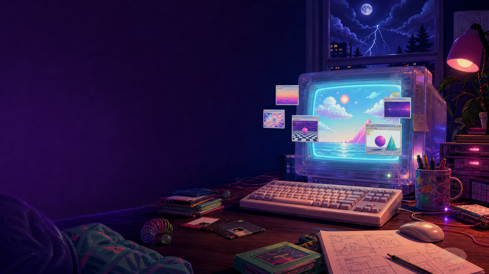

> live builds: 8
> scaffold shelves: 1
> generated hero: loaded
> rule: each folder is its own project
brainstorm
prototype
click around
ship the weird first version
pocket zoo warming up
museum shelf added
pixel pop blinking
repeat
Project folders
Choose a doorway
Eight live builds, one shelf still waiting for its first page.
Live
Time Capsules
Small memories sealed for later.
Open
Live
365 Buttons
A year of tiny presses and strange outcomes.
Open
Live
Scrollbreak
A pause button for the endless feed.
Open
Live
Pocket Zoo
A tiny habitat of draggable, snackable cartoon animals.
Open
Queued
Whimsy Net
An idea folder, still before its first page.
Queued
Live
Fun Internet Museum
A loud hallway of web relics, strange links, fake popups, and button trouble.
Open
Live
Pixel Pop Arcade
A cutesy cabinet row with Space Invaders, Pac-Munch, and Snake.
Play
Live
Slopternet
A glossy AI SaaS landing that falls apart the more you use it.
Open
Live
Quiet Collapse
A calm civic resource portal that quietly stops agreeing with itself.
Open
Loose rules
The live doors point to built dist pages. Unbuilt shelves stay visible until they are ready to publish.